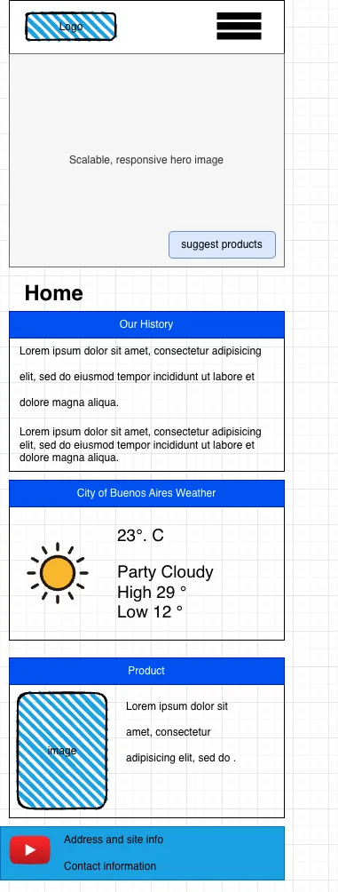
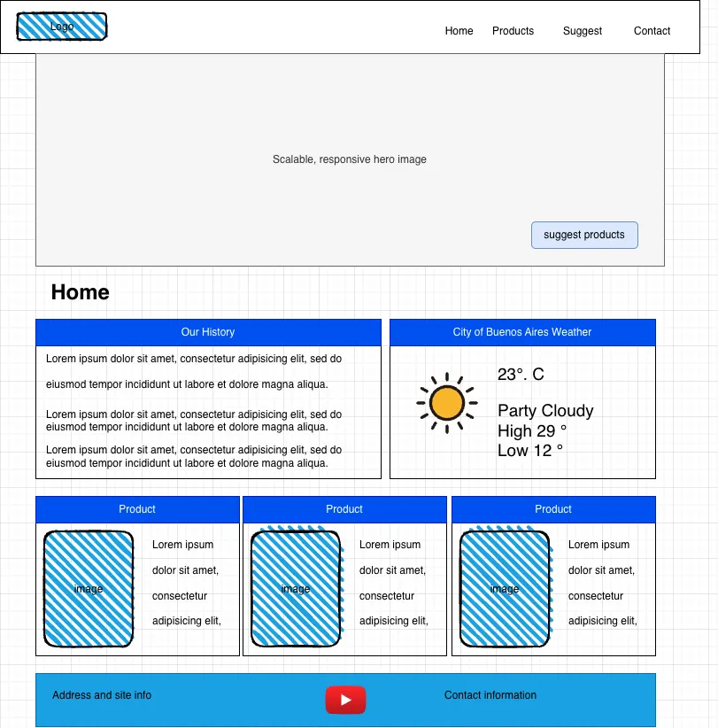

Site Plan: Knowing Argentina's Best Products
Site Name
Knowing Argentina's Best Products
This name was selected because the site highlights iconic Argentine products in a simple and friendly guide for
international audiences.
URL: knowargentina.com.ar
Site Purpose
The purpose of this website is to showcase well‑known Argentine products such as yerba mate and alfajores. It
provides cultural context, product details, and recommendations using a dynamic product list pulled from a JSON
file with the Fetch API. The site includes a modal for additional product details and follows responsive,
accessible design principles.
Scenarios
- "If I visit Argentina, what traditional foods and iconic products should I try first?"
- "What does each region of Argentina offer in terms of unique products or foods, such as patagonian sweets,
northern spices, or cuyana specialties?"
- "Where can I learn more about the cultural background and ingredients of each traditional Argentine product?"
Color Scheme
Selected colors:
- Dark Blue (#003A70) – Used for navigation menus and strong accents.
- Argentine Blue (#74ACDF) – Used for headings and accents.
- White (#FFFFFF) – Used as the background color for a clean, warm look.
Typography
Selected fonts:
- Georgia – Used for all headings to create a classic, elegant tone.
- Helvetica Neue / Arial – Used for body text for readability and simplicity.
Wireframe
Home Page Wireframes (mobile and desktop layouts):
Mobile View
Header → Hero image → Hystory and Wheater → Featured products preview → Footer

Desktop/Tablet View
Header (horizontal) → Hero image → Two-column (intro) + image → Product previews in grid → Footer
